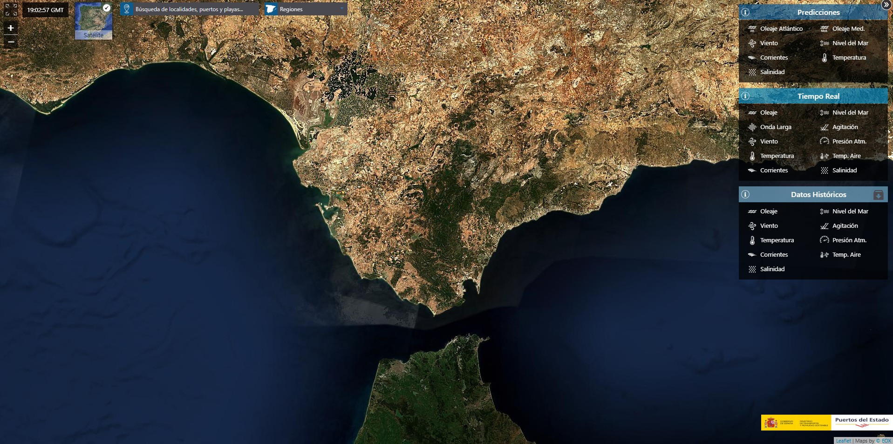
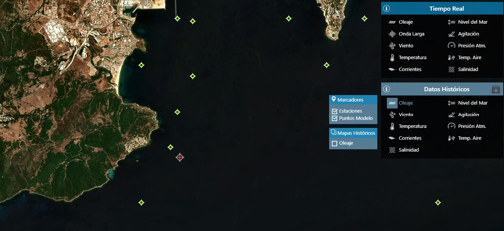
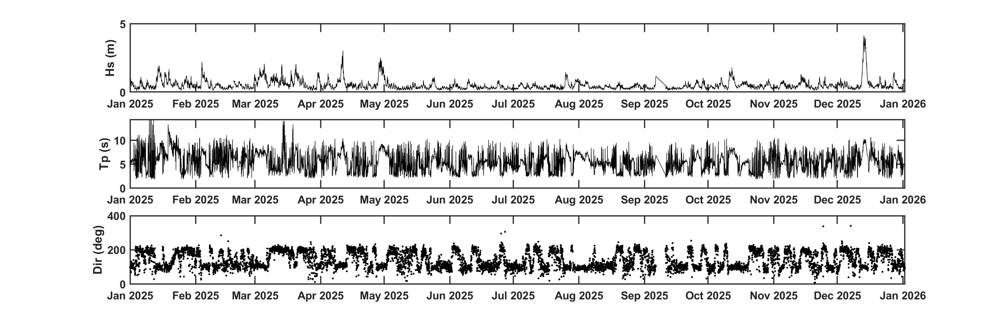
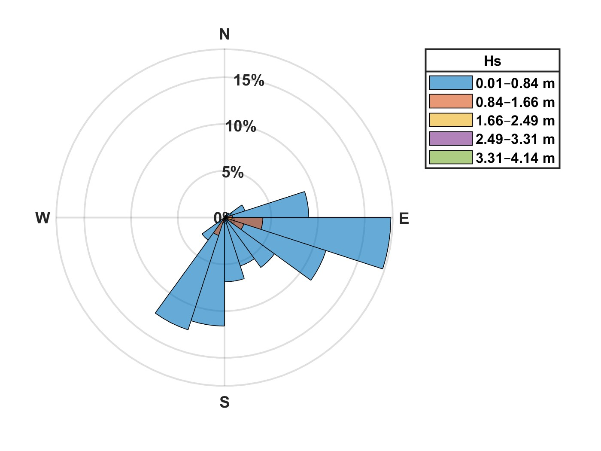

Extract and analyse wave buoy data
Wave climates are primarily characterised by three key parameters: significant wave height (Hs), peak period (Tp), and wave direction.
Significant wave height, Hs, is defined as the average height of the highest one-third of waves recorded in a sea state. It is measured in metres (m) and represents the energy level of the wave field.
The peak period (Tp) is the wave period associated with the maximum energy in the wave spectrum. It is measured in seconds (s) and indicates the dominant wave period.
Wave direction describes the direction from which the waves are coming. It is expressed in degrees (°) using a compass convention where 0° corresponds to North, 90° to East, 180° to South, and 270° to West.
Where to find data
The Spanish national monitoring network operated by Puertos del Estado provides open-access wave data from offshore buoys distributed along the Spanish coastline. These buoys measure a range of oceanographic and meteorological variables in near real time.

Interactive Puertos map and interface
Data can de publicly accesses through: Puertos del Estado PORTUS website
Analysis of the data
On my GitHub page, you can find Python scripts with examples showing how to plot and analyse Puertos del Estado wave buoy data
GitHub.
Note: For convenience, before loading the datasets using the provided Python script, change the downloaded file extension from .csv to .txt.
The first step is to locate the site that you are interested in and the closest buoy to that point in the Puertos del estado interactive explorer, in the image below you can see in a red circle the selected buoy and Oleaje (Waves) as the selected parameter to download

Interactive Puertos map and selected buoy and variables
In the example provided in my Github page (Click here to go to my Github), you can find a pre-downloaded dataset for the year 2025 from the 'Boya de Algeciras-Pta. Carnero' location. A Python script is also included, which reads the data and visualises the main variables, as shown in the image below.

Significant wave height (Top), Peak period (Mid) and Wave Direction (Bottom) for 2025 at 'Boya de Algeciras-Pta. Carnero'
In addition, after visualising the data, significant wave height and wave direction can be used to identify the dominant wave directions through wave rose analysis.

Wave rose for 2025 at 'Boya de Algeciras-Pta. Carnero'
Pro tip: Experiment with the Python code to customise the wave rose properties, such as the number of directional bins.